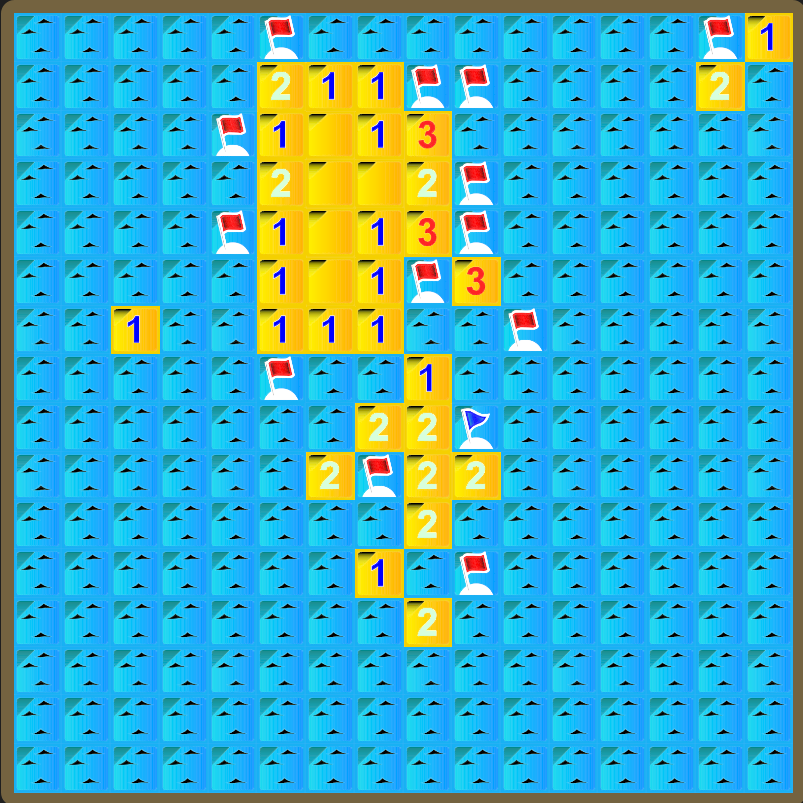
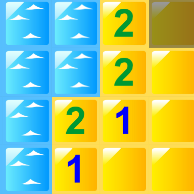

Présentation du projet

Le but du jeu dans le démineur a deux joueurs est le suivant :
- On a d'abord une grille de 16x16 cases
- Il y a 50 Bombes dans cette grille placées aléatoirement
- Le but est de trouver le plus de bombes que l'adversaire
-
Contrairement Au démineur normal ou on ne doit pas trouver les bombes
- Le joueur doit cliquer n'importe ou dans la grille pour trouver une bombe
-
Si il en trouve une, il rejoue et gagne 1 point
-
Sinon c'est au tour de l'adversaire.
- Chaque nombre dit qu'autour de lui, il y a un nombre de bombes :
-
Pour l'exemple, le 2 en bas montre qu'autour de lui il y a 2 bombes
-
passez votre souris sur l'image et les cases rouges sont la ou il peut y avoir une bombe pour ce 2

Pour la page de présentation du sujet, il faudra expliquer le fonctionnement du démineur à deux joueurs ainsi que les règles du jeu pour quelqu'un qui ne connaîtrait pas le jeu (des illustrations seront les bienvenues pour une meilleure compréhension)
W3 validator